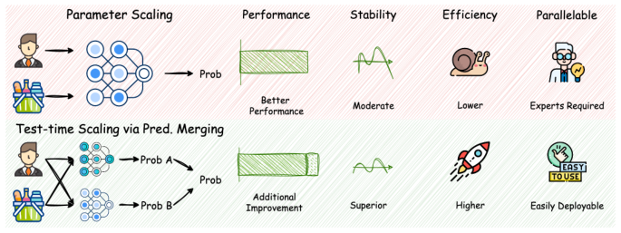
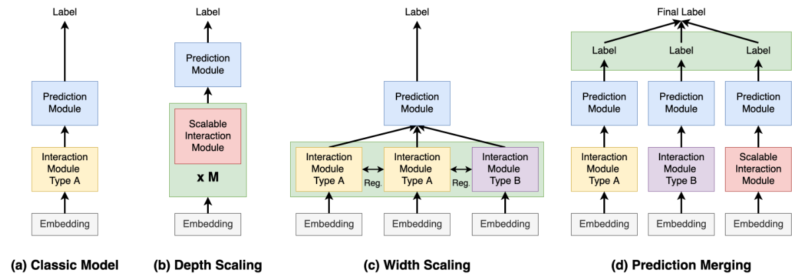
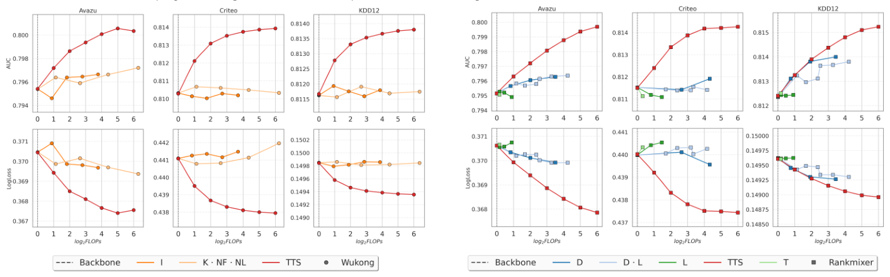
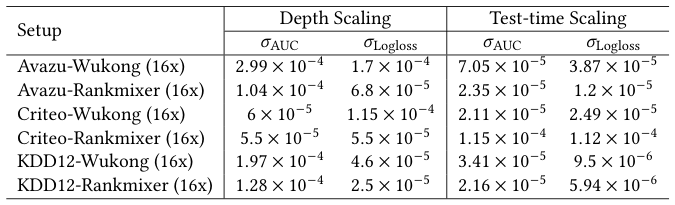
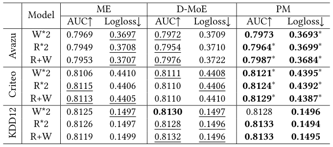
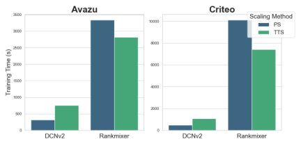

Exploring Test-time Scaling via Prediction Merging on Large-Scale Recommendation (大规模推荐中基于预测融合的测试时缩放探索)
- 会议/期刊: SIGIR 2026
- 推荐链路定位: 精排 (CTR Prediction / Ranking)
- 研究方向: 去偏公平、可信隐私与工业架构 / CTR 预估与特征交叉
- 论文原文: https://arxiv.org/abs/2512.07650v1
- 开源代码: https://github.com/aTitye/TTS4CTR
TL;DR (核心速览)
本文针对大规模推荐系统（DLRS）中"参数缩放"（深度/宽度缩放）训练成本高、稳定性差、部署困难的问题，首次将语言模型中的测试时缩放（Test-time Scaling） 引入推荐领域。核心痛点是：推荐模型输入结构统一、数据分布单一，难以像 LM 那样自然产生多样输出。作者提出两条获取"多样且有意义"预测的路径——异构架构组合与同构架构下随机初始化，并在 logit 预测空间直接平均融合（Prediction Merging）。在 Criteo/Avazu/KDD12 三个基准、8 个骨干模型上，16× 同构缩放使 Wukong 在 Avazu 上 AUC 从 0.7954 提升至 0.8001（+0.47pt），且在同推理预算下优于参数缩放，方差更小、可并行部署。
Background & Motivation (背景与动机)
- 领域背景与主流范式: 受 LM 缩放定律启发，DLRS 的缩放沿两个维度展开：(i) 宽度缩放 (Width Scaling)，并行扩展交互模块数量，每个模块配独立 embedding 表（如 Multi-Embed、D-MoE），类似 MoE 但特征多 embedding 表；(ii) 深度缩放 (Depth Scaling)，设计可无缝堆叠的统一交互层（如 Wukong、RankMixer）。两者本质都是在训练时增加可训练参数量。
- 现有方法局限 (Limitations of Prior Work):
- 训练成本与调参负担：深度缩放需在大量缩放维度上做探索（附录 A.3），在大规模生产数据上代价非平凡；宽度缩放需设计多样性正则项防止表征坍缩。
- 稳定性不足：深度缩放模型对随机种子敏感，方差较大（表 3 显示 Wukong 16× 的 σAUC 达 2.99×10⁻⁴）。
- 部署刚性：参数缩放后的单一巨型模型难以拆分到多服务器并行，在线推理延迟随参数量线性增长。
- 核心挑战 (Key Challenge): LM 能通过 prompt/解码随机性天然产生多样输出，但推荐系统为满足大规模在线服务偏好统一输入结构，且所有专家特征被统一输入以追求最优性能，因此如何在测试时对同一实例生成多样且有意义的输出是直接决定测试时缩放可用性的关键。
- 核心洞察与切入点 (Key Insight): 作者提出两条获取多样性的路径：(1) 利用不同推荐架构的异构性（不同架构捕捉不同交互与相关性已被反复证明有效）；(2) 利用同构架构下随机初始化的随机性（初始化对训练至关重要，不同随机种子可在 logit 空间产生多样性）。二者可组合，且融合直接在预测 logit 空间进行，无需对单模型架构做任何假设。图 1 直观对比了参数缩放与测试时缩放的差异。

Problem Formulation & Method (问题定义与方法架构)
1. 符号定义与输入表征 (Notations & Input Representations)
- 数据集 \(\{X, Y\}\)，基数 \(|X,Y| = N\)；\(X\) 为多类别特征集（用户、物品、上下文），\(Y \in \{0,1\}^N\) 为交互标签。
- 每个特征 \(x_i\) 属于特征域 \(\mathbf{x}_i\)，基数 \(D_i\)；对应 embedding 表 \(E \in \mathbb{R}^{D_i \times d}\)，\(d\) 为 embedding 维度。
- 单特征 embedding：\(e_i = E(x_i)\)；拼接后 \(e = [e_1, \cdots, e_n]\)，\(n\) 为特征域数量。
- 交互层：\(h = I(e)\)；预测模块 \(F: I \to Y\)，输出 \(\hat{y} = F(h)\)。
2. 整体流水线 (Overall Architecture)
数据流向：多类别特征 \(\to\) embedding 查表与拼接 \(\to\) 交互模块（单模型 / 深度堆叠 / 宽度并行）\(\to\) 预测模块输出 logit \(\to\) 多模型 logit 平均融合 \(\to\) 最终预测。图 2 对比了四种结构：(a) 经典模型、(b) 深度缩放、(c) 宽度缩放、(d) 预测融合。

flowchart TD
A["输入层: 多类别稀疏特征 + 稠密特征"] --> B["Embedding 查表与拼接 e"]
B --> C1["模型 G(1): 架构/种子 1"]
B --> C2["模型 G(2): 架构/种子 2"]
B --> C3["... 模型 G(M)"]
C1 --> D["logit 空间平均融合 ỹ = (1/M)Σŷ(m)"]
C2 --> D
C3 --> D
D --> E["BCE 损失 / 在线打分输出"]3. 核心模块设计与数学原理 (Key Designs & Formulations)
(1) 参数缩放的形式化（作为对照基线）
- 深度缩放：堆叠 \(M\) 个交互层，\(h^{(i)} = I^{(i)}(h^{(i-1)})\)，\(h^{(0)} = e\)，最终 \(\hat{y} = F(h^{(M)})\)。信息在层间隐式融合。
- 宽度缩放：\(M\) 套 embedding 表 \(e_i^{(m)} = E^{(m)}(x_i)\)，各专家 \(h^{(m)} = I^{(m)}(e^{(m)})\)，平均得 \(h = \frac{1}{M}\sum_{m=1}^{M} h^{(m)}\)，损失 \(\mathcal{L} = \mathcal{L}_{pred} + \lambda \mathcal{L}_{reg}(\{h^{(m)}\})\)，\(\lambda\) 控制多样性正则强度。注意宽度缩放是在交互表征空间融合，且所有专家共享单一监督信号。
(2) 预测融合（本文核心）
与参数缩放的两点本质差异：(i) 预测融合直接鼓励生成多样输出，而参数缩放只产生单一预测；(ii) 预测融合的监督信号数量更多——各模型 \(G^{(m)}: x \to y\) 独立或分组训练，而现有方案所有专家联合训练仅一个监督信号加人工先验正则。
给定模型族 \(\{F^{(m)} | 1 \le m \le M\}\)，对每个实例： $\(\hat{y}^{(m)} = G^{(m)}(x), \quad \tilde{y} = \frac{1}{M}\sum_{m=1}^{M} \hat{y}^{(m)}\)$
关键设计直觉：融合发生在 logit 空间而非表征空间，因此对单模型架构无任何假设，异构/同构模型可无缝集成；且由于是并行结构，天然适配多服务器部署。
(3) 分组训练算法（Algorithm 1）
将初始模型集划分为 \(K\) 个互斥子集 \(S_1, \cdots, S_K\)，逐组训练：每组内用式 (10) 计算融合预测 \(\tilde{y}_k\)，再以式 (3) 的 BCE 目标调优组内模型。分组训练相比全联合训练可降低显存与通信开销（附录 B.2 有消融）。
4. 训练目标、负采样与推理复杂度 (Optimization, Negative Sampling & Complexity)
- 损失函数: 各模型（或分组）均采用标准二分类交叉熵： $\(\mathcal{L} = \mathcal{L}_{pred} = -\frac{1}{N}\sum_{x,y \in \{X,Y\}} y\log(\hat{y}) + (1-y)\log(1-\hat{y})\)$ 宽度缩放基线额外加 \(\lambda \mathcal{L}_{reg}\)；本文预测融合无额外正则项。
- 训练负采样策略: 本文为 CTR 二分类任务，正负样本由原始点击日志天然给出（曝光未点击为负），原文未采用额外负采样策略，亦未报告负采样比例调整。
- 时间与空间复杂度:
- 离线训练：\(M\) 个模型可独立/分组训练，总训练 FLOPs 与 \(M\) 个独立模型之和相当，但无需像深度缩放那样探索缩放维度。
- 在线推理：融合为 \(M\) 次前向 + 一次平均，天然可并行；作者强调"随着在线并行服务器增加可无缝加速，且不影响用户侧推理时间"。原文未报告具体 ms/request 延迟与峰值显存数值。
Experimental Setup & Evaluation Protocol (实验设置与评估协议)
- 数据集统计与预处理: 三个公开真实数据集，统计量在附录 A.1（正文未给出完整表格，以下为正文描述的预处理规则）：
| 数据集 (Dataset) | 用户数 (#Users) | 物品数 (#Items) | 交互数 (#Interactions) | 稀疏度/密度 (Sparsity) | 模态/辅助特征说明 |
|---|---|---|---|---|---|
| Criteo | 原文未报告 | 原文未报告 | 一周广告点击数据 | 原文未报告 | 26 个类别域 + 13 个数值域；数值 \(x>2\) 时离散化为 \(\lfloor \log_2(x) \rfloor\)，否则置 1；低频类别替换为 "OOV"，min_count=10 |
| Avazu | 原文未报告 | 原文未报告 | 10 天点击日志 | 原文未报告 | 24 个类别域；移除 instance_id，timestamp 拆为 hour/weekday/is_weekend；"OOV" 替换，min_count=2 |
| KDD12 | 原文未报告 | 原文未报告 | 搜索会话日志 | 原文未报告 | 11 个类别域；click 字段为点击次数；"OOV" 替换，min_count=10 |
- 数据划分方式 (Splitting Strategy): 原文正文未明确说明训练/验证/测试划分比例或是否采用时间戳切分（统计与划分细节置于附录 A.1，正文未展开）。从 CTR 预估惯例推断应为按比例随机划分，但原文未报告，存在潜在时间信息泄露风险无法排除。
- 排名评测协议 (Ranking Protocol): 本文为 CTR 二分类任务，采用 AUC 与 Log Loss 评估，非全库排序/采样排序协议；原文未报告 GAUC 或 Top-K 指标。
- 评价指标与显著性检验: AUC（0.1% 提升即视为显著，遵循 [8,23] 惯例）与 Log Loss；表 1/表 2 中 ∗ 表示相对骨干模型的双侧 \(t\) 检验 \(p < 0.05\) 显著；表 3 报告 5 次随机试验的标准差。Embedding 维度 \(d\) 原文正文未明确给出（应在附录 A.1/A.3）。
Key Experimental Results (核心实验结果)
1. 主实验对比 (Main Results)
同构架构缩放（表 1）：8 个骨干模型（FNN、IPNN、DeepFM、DCN、DCNv2、FinalMLP、Wukong、RankMixer）在 2×/4×/8×/16× 缩放下的 AUC/Logloss。关键结果摘录：
| 数据集 | 指标 | 骨干 (Backbone) | 16× 同构缩放 (Ours) | 相对提升 (Improv.) |
|---|---|---|---|---|
| Avazu | AUC / Logloss | Wukong 0.7954 / 0.3704 | 0.8001 / 0.3677 | +0.47pt / -0.0027 |
| Avazu | AUC / Logloss | RankMixer 0.7952 / 0.3706 | 0.7988 / 0.3684 | +0.36pt / -0.0022 |
| Avazu | AUC / Logloss | DCNv2 0.7946 / 0.3711 | 0.7989 / 0.3685 | +0.43pt / -0.0026 |
| Criteo | AUC / Logloss | RankMixer 0.8115 / 0.4400 | 0.8142 / 0.4375 | +0.27pt / -0.0025 |
| Criteo | AUC / Logloss | DCNv2 0.8116 / 0.4398 | 0.8132 / 0.4384 | +0.16pt / -0.0014 |
| KDD12 | AUC / Logloss | RankMixer 0.8124 / 0.1496 | 0.8148 / 0.1491 | +0.24pt / -0.0005 |
| KDD12 | AUC / Logloss | IPNN 0.8118 / 0.1498 | 0.8134 / 0.1494 | +0.16pt / -0.0004 |
异构架构缩放（表 2）：Wukong+RankMixer 组合在 Avazu 上从 1× 的 0.7982 提升至 32× 的 0.8030（+0.48pt），为全文最高 AUC；Criteo 上 32× 达 0.8145；KDD12 上 32× 达 0.8155。强架构组合（Wukong+RankMixer）优于 Rankmixer+DCNv2 与 Wukong+DCNv2。

2. 消融实验与控制变量分析 (Ablation Study)
- 深度缩放 vs 测试时缩放（RQ2，图 3）：在相同 FLOPs 预算下，测试时缩放曲线整体位于参数缩放之上；可扩展架构（Wukong、RankMixer）在参数缩放下仍遵循缩放律，而 DCNv2、FinalMLP 在高 FLOPs 下出现递减甚至负收益，说明经典模型参数可扩展性有限。
- 稳定性（表 3）：5 次随机试验下，测试时缩放（从 64× 种子模型集中重复采样 16× 五次）的 σAUC 普遍低于深度缩放，如 Avazu-Wukong 从 2.99×10⁻⁴ 降至 7.05×10⁻⁵，Avazu-Rankmixer 从 1.04×10⁻⁴ 降至 2.35×10⁻⁵；Criteo-Rankmixer 例外（测试时缩放 σAUC 反而略高，1.15×10⁻⁴ vs 5.5×10⁻⁵），作者未深入解释。
- 与宽度缩放对比（RQ3，表 4）：原文表 4 对比 Multi-Embed (ME) 与 D-MoE，正文未展开具体数值讨论（表格在原文中给出）。
- 正交性（RQ4）：测试时缩放与参数缩放正交，可叠加使用。
- 预测融合 vs 模型融合（RQ5）：正文未给出具体数值结论，需参见原文对应小节。
- 分组训练消融：置于附录 B.2，正文未展开。


3. 稀疏度/冷启动分桶与超参敏感度 (Sparsity Buckets & Hyperparameters)
- 用户/物品交互频次分桶表现: 原文未报告长尾/冷启动分桶实验。
- 关键超参数敏感度: 原文未系统报告温度系数、损失权重等超参敏感度；缩放因子（2×–64×）的影响通过表 1/表 2 与附录 B.1（DCNv2、RankMixer、Wukong 扩至 64×）呈现，结论一致：性能随模型数增加而提升，但边际收益递减。
- 缩放因子对比（表 5）: 在 Avazu 与 KDD12 上对比 Wukong 与 RankMixer 在不同缩放因子下的表现，括号内为相对 Base 模型的提升。

- 线上 A/B 测试结果: 原文仅包含离线实验，未报告线上 A/B 测试；但作者论证了在线部署的并行加速特性（增加并行服务器不影响用户侧延迟）。
Highlights, Limitations & Critiques (亮点、局限与审稿级批判)
- 核心亮点与可迁移性:
- 新缩放维度的提出：将 LM 的测试时缩放思想系统迁移到 DLRS，且论证其与参数缩放正交，为工业界提供了一条"不改模型结构、只加并行推理"的扩容路径。
- logit 空间融合的架构无关性：融合算子极简（平均），对单模型无假设，异构/同构均可组合，工程可迁移性极强。
- 稳定性与部署友好：方差显著低于深度缩放，且天然并行，适合多服务器部署。
- 局限性与审稿视角批判 (Critical Limitations):
- 评估协议薄弱：仅用 AUC/Logloss，缺少 GAUC、Top-K 排序指标与校准（Calibration）分析；数据划分策略正文未交代，无法排除时间泄露风险。
- 融合算子过于朴素：仅做等权平均，未探索加权融合、Stacking 或学习式融合；对"多样性"仅有定性论证（RQ7），缺少预测相关性/多样性的定量度量（如 pairwise 相关系数、集成多样性指标）。
- 效率论证不完整：未报告单次推理延迟 (ms/request)、峰值显存、训练总耗时等关键工程指标，"同预算下优于参数缩放"的 FLOPs 对齐口径需更严谨说明。
- 基线覆盖有限：宽度缩放对比（表 4）与模型融合对比（RQ5）正文讨论不足；缺少与经典集成学习（Bagging/Snapshot Ensemble）的对照。
- 理论深度不足：为何 logit 平均有效、多样性如何量化驱动增益，缺乏偏差-方差分解或集成学习理论层面的分析。
Rating (四维评分)
- 方法创新性 (Novelty): ⭐⭐⭐⭐
- 评估协议与实验扎实度 (Protocol & Experiments): ⭐⭐⭐
- 写作与数学规范度 (Clarity & Rigor): ⭐⭐⭐⭐
- 工业落地与复现价值 (Industrial & Practical Value): ⭐⭐⭐⭐⭐